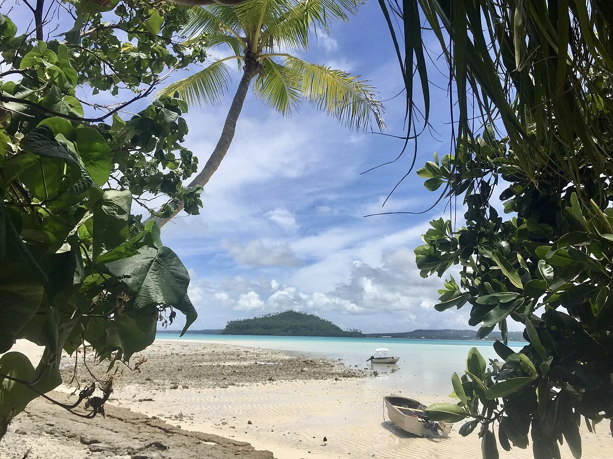

Nukuhione — lagon de Wallis
Wallis, Wallis-et-Futuna · plongée, baignade

Îlot du lagon de Wallis, dans le district de Hahake, qui appartient au village de Liku. France.fr le cite, avec Nukuhifala, parmi les deux îlots où l’on plonge : très peu de gros prédateurs, mais des récifs coralliens magnifiques, et des plages désertes. Selon Wikipédia, le « trou du diable », un tombant du récif, est au nord de l’îlot et le « trou de la tortue », un autre tombant, au sud. À Wallis, la mer est à 29 °C en décembre et en janvier (Climats et Voyages).
- Lieu
- Wallis, Wallis-et-Futuna
- Niveau
- Variable selon les conditions
- Activités
- plongée, baignade
- Type d'eau
- Mer / océan
- Coordonnées
- -13.27, -176.13 (position approximative du secteur)
Dangers à connaître
- Cyclones de novembre à mi-mai, plus probables de fin décembre à début avril. Wallis est très pluvieuse : environ 345 mm en décembre et 395 mm en janvier.
- Des méduses bleues ont déjà envahi le lagon de Wallis ; celles échouées ont causé des brûlures au contact.
- Les plongées se font surtout en bateau, dans le lagon ou près des récifs.
- L’îlot appartient au village de Liku : renseigne-toi avant d’y accoster.
Le conseil d'Ocean Buddy
Plonge avec un professionnel local : les services de plongée de l’île sont limités, il est conseillé de réserver à l’avance.
Ouvrir dans Ocean Buddy Télécharger sur l'App Store
Source : Fiche Ocean Buddy · décembre 2026 · d’après France.fr, Wikipédia (Nukuhione), PADI, Les Nouvelles Calédoniennes et Climats et Voyages · à vérifier localement.